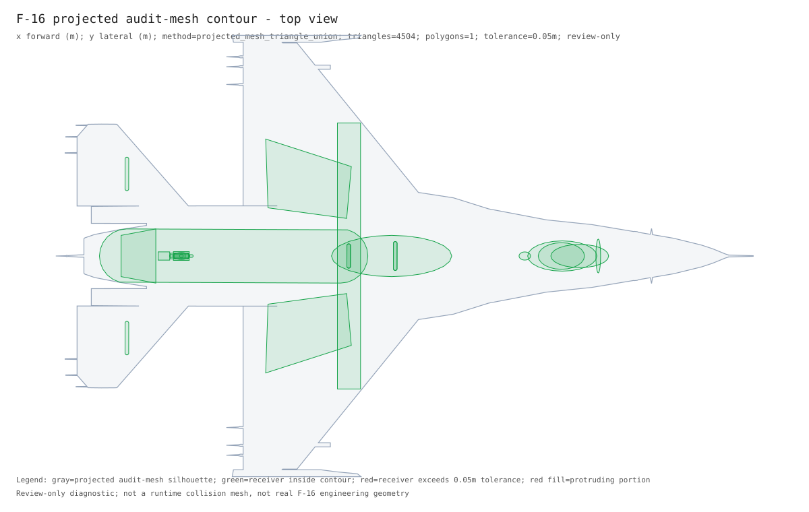
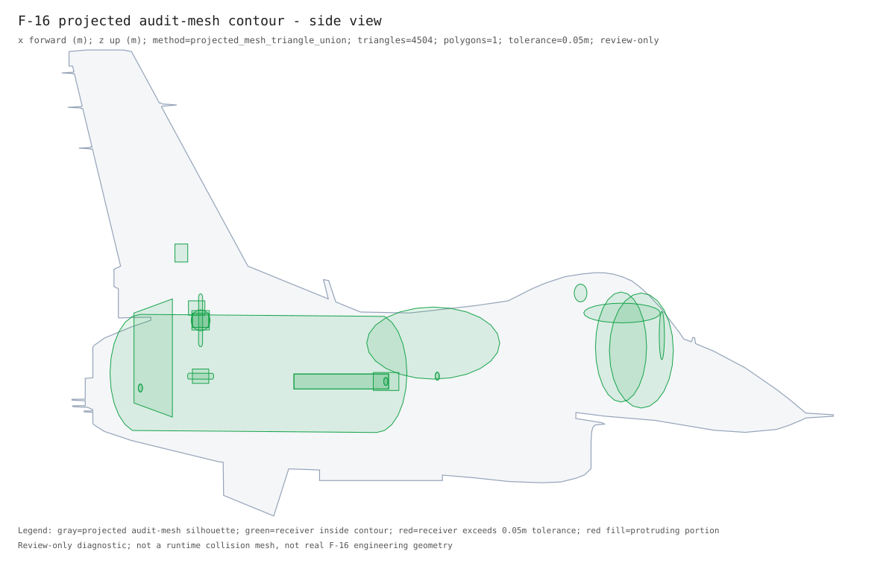

F-16 Final Geometry Contour Result
Current final visual result only. Retired intermediate component, semantic, prior, parent-child, placement, triage, and proxy-dashboard visual pages are not generated in the current packet.
Whole-Airframe Projected Mesh Contour Containment
Review-only diagnostic built from the full audit glTF mesh by projecting triangle faces into each view and unioning those projected faces. Tolerance is an engineering review margin, not physical clearance. Contours: top: projected_mesh_triangle_union triangles=4504 polygons=1 pts=222; side: projected_mesh_triangle_union triangles=4504 polygons=1 pts=159; front: projected_mesh_triangle_union triangles=4504 polygons=1 pts=201.



| item | type | shape | outside_views | outside_samples | max_outside_m |
|---|